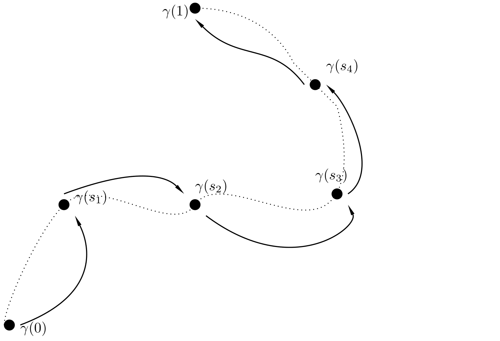

In this tutorial, we will present how to generate admissible paths of steady states for the homogeneous reaction-diffusion equation:
This a key argument for ensuring controllability that has been studied in [2,3,4,5].
Stair-case method
The stair-case method ( see [1]) guarantees the following:
If we have an admissible continuous path of steady states, for any initial datum in the path, any target function in the path and for $T>0$ sufficiently large, there exists a function $a$ such that drives the system from the initial datum to the target fulfilling the state-constraints along the trajectory.

Figure 1. Qualitative understanding of the Stair-case method. When we have a continuous admissible path of steady-states, one can find a control that is connecting the initial steady state with the target by "jumping" along the continuous path.
</div>
Extension to ball, and the phase-plane analysis
We will restrict ourselves to the construction of paths that connect the steady state $w\equiv 0$ with the steady state $w\equiv \theta$. For doing such example with our model bistable equation.
In order to construct the paths we will use phase-plane techniques for which we use radial coordinates. Our original domain might not be a ball, for this reason we extend it to a ball and firstly construct the path there.
 Figure 2. Extension of our domain to a ball.
Figure 2. Extension of our domain to a ball.
Remind that the important issue is to be able to guarantee that for every domain $w\equiv0$ and $w\equiv\theta$ are connected in an admissable way and this is seen in the phase plane representation of the elliptic equation.
Now, considering the energy
where $F(u)=\int_0^u f(s)ds$, one can see that the radial ODE dissipates.
Define the following region:
Let $\theta_1$ be defined as:
Note that the region defined by
Note that $\Gamma\subset D$.
Take $(u_0,0)\in \Gamma$, then the solution of the radial equation with initial
datum $(u_0,0)$ satisfies:
So $(u,v)\in\Gamma$ for all $r>0$.
We have that the blue line (the border of $\Gamma$) in the following figure determines a positively invariant region.
Then, making $a$ change continuously from $0$ to $\theta$ we generate a continuous path (by the Gromwall inequality) that is admissible since the invariant region $\Gamma$ is inside the admissible set.
 Figure 3. Invariant region and construction of the path.
Figure 3. Invariant region and construction of the path.
Animation of the path
Figure 4. Path of steady states.
If our domain is not a ball we restrict our path to the original domin to obtain the desired path.
Other features
General existence of admisible paths is not true due to the comparison principle. Non-trivial steady states can exist that block any possibity to control (See blog entry [Nontrivial]).
Here we restrict ourselves in the one dimensional case. In the following figure one can see how can we connect the steady state $w\equiv 0$ with the first nontrivial solution with boundary value $0$.
Figure 5. Path of steady states.
However, since this path touches the boundary of the admissible set controllability cannot be guaranteed due to the comparison principle.
Another important remark to be mentioned is that if we forget about the state constraints, more paths can be generated, provided that the ODE representation of the elliptic equation does not blow up. The following figure is an example of a path connecting $w\equiv 0$ with $w\equiv 1$ that violates the constraints:
Figure 6. Path of steady states violating constraints.
References:
[1] D. Pighin, E. Zuazua, Controllability under positivity constraints of multi-d wave equations, in:
Trends in Control Theory and Partial Differential Equations, Springer, 2019, pp. 195–232.
[2] J.-M. Coron, E. Trélat, Global steady-state controllability of one-dimensional semilinear heat equa-
tions, SIAM J. Control. Optim. 43 (2) (2004) 549–569.
[3] C. Pouchol, E. Trélat, E. Zuazua, Phase portrait control for 1d monostable and bistable reac-
635
tion–diffusion equations, Nonlinearity 32 (3) (2019) 884–909.
[4] D. Ruiz-Balet and E. Zuazua. Controllability under constraints for reaction-diffusionequations: The multi-dimensional case. Preprint available athttps://cmc.deusto.eus/domenec-ruiz-balet/.
[5] D. Ruiz-Balet and E. Zuazua. Control of certain parabolic models from biology and social sciences. Preprint available at https://cmc.deusto.eus/domenec-ruiz-balet/.